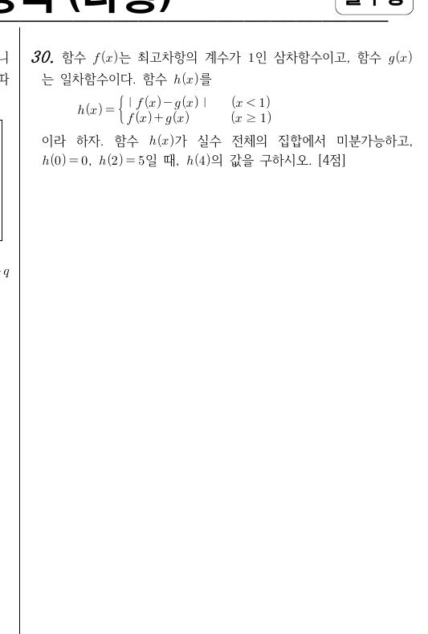

2021학년도 수능 나형 30번 · 단답형 4점 · 정답 39
실제 수능 문제지다. 절댓값과 미분가능성이 만나는 지점을 보자.

* 원문제: 함수 \(f(x)\)는 최고차항의 계수가 1인 삼차함수이고, 함수 \(g(x)\)는 일차함수이다. 함수 \(h(x)\)를 \(h(x)=\begin{cases}|f(x)-g(x)|&(x<1)\\f(x)+g(x)&(x\ge 1)\end{cases}\)이라 하자. 함수 \(h(x)\)가 실수 전체의 집합에서 미분가능하고, \(h(0)=0,\ h(2)=5\)일 때, \(h(4)\)의 값을 구하시오. [4점]
절댓값 \(|\ |\)는 0이 되는 점에서 꺾인다. 그런데 \(h\)는 실수 전체에서 미분가능해야 한다. 꺾이지 않으려면 어떻게 해야 할까? 답: 0이 되는 점에서 그래프가 \(x\)축에 '접해야' 한다 — 즉 중근이어야 한다. 이 한 줄이 문제의 80%다.
두 함수를 하나로 묶는 것이 시작이다.
\(f\)는 삼차(최고차항 1), \(g\)는 일차이므로 \(p(x)=f(x)-g(x)\)는 최고차항이 1인 삼차함수다.
(\(x\ge 1\)에서는 \(f+g=(f-g)+2g=p+2g\)다.)
\(h(0)=0\)이고 \(0<1\)이므로 \(|p(0)|=0\), 즉:
Q1. \(p(x)\)의 차수와 최고차항의 계수는?
정답! 삼차 − 일차 = 삼차. 최고차항은 \(f\)의 \(x^3\) 그대로다.
\(f\)의 최고차항에서 \(g\)의 최고차항을 빼보자. 일차함수는 \(x^3\) 항에 영향을 못 준다.
\(r\) 슬라이더를 움직이며 \(x=r\)에서의 모습을 관찰하자.
\(|p(x)|\), \(p(x)=(x-r)(x-2.5)\) (단근)\(|q(x)|\), \(q(x)=(x-r)^2(x-2.5)\) (중근)
관찰 1 빨간 곡선(\(|p|\))은 \(x=r\)에서 항상 뾰족하게 꺾인다. \(p\)가 0을 뚫고 지나가기 때문이다.
관찰 2 초록 곡선(\(|q|\))은 \(x=r\)에서 매끄럽다. \(q\)가 0에서 접하고 돌아가기 때문이다.
관찰 3 \(r\)을 움직여도 이 차이는 안 변한다. 꺾임 vs 매끄러움은 근의 차수가 결정한다.
실험실의 발견을 문제에 적용한다.
\(h\)는 실수 전체에서 미분가능해야 하므로, 특히 구간 \((-\infty,1)\)에서 \(|p(x)|\)가 미분가능해야 한다.
실험실에서 본 대로, \(|p(x)|\)가 \(p(x)=0\)인 점에서 미분가능하려면 그 점이 중근(접하는 점)이어야 한다. 단근(뚫는 점)에서는 반드시 꺾인다.
STEP 1에서 \(p(0)=0\)을 얻었다. \(0<1\)이므로, \(x=0\)은 \(|p|\)의 미분가능 구간 안에 있다. 따라서:
* \(p\)의 근은 \(0\)(이중)과 \(k\)(단일)다. 만약 \(k<1\)이면 \(x=k\)는 \((-\infty,1)\) 안의 단근이 되어 \(|p|\)가 꺾인다. 따라서 \(k\ge 1\)이어야 한다. (\(k=1\)이면 단근이 경계 \(x=1\)에 있어 \((-\infty,1)\) 안에는 없다.)
Q2. \(p(0)=0\)인데 \(|p(x)|\)가 \(x=0\)에서 미분가능하려면, \(x=0\)은 \(p\)의 어떤 근이어야 하는가?
정답! 뚫으면 꺾이고, 접하면 매끄럽다. 실험실의 초록 곡선을 떠올리자.
실험실로 돌아가자. 빨간 곡선(단근)은 \(x=r\)에서 어떻게 되는가?
조각함수의 경계에서는 연속+미분가능 두 개를 본다.
\(k\ge 1\)이므로 \(p(1)=1-k\le 0\). 연속 조건 \(|p(1)|=f(1)+g(1)\)에서:
미분가능 조건 (좌미분계수 = 우미분계수):
\(g\)는 일차함수이므로 기울기가 \(2k-3\)으로 일정하고 \(g(1)=k-1\):
남은 숫자 조건을 쓴다.
\(2\ge 1\)이므로 \(h(2)=f(2)+g(2)=p(2)+2g(2)\):
\(k\ge 1\)이라는 가정이 성립함을 확인했다. (\(k=1\)이었다면 \(h(2)=2\)가 되어 탈락.)
Q3. \(h(2)=5\)에서 \(k\)를 구하는 계산의 핵심은?
정답! \(x=2\)는 \(x\ge 1\) 조각에 속한다. 어느 조각인지 먼저 판단하는 것이 이 문제의 기본기다.
\(h(x)\)의 정의를 다시 보자. \(x=2\)는 어느 경우(\(x<1\) / \(x\ge 1\))에 들어가는가?
\(k=\frac52\)이므로 \(p(x)=x^2\left(x-\frac52\right)\), \(g(x)=2x-\frac12\).
정답 39